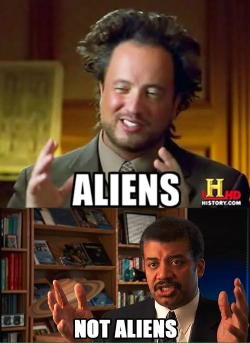

Je úsmevné sledovať Prima ZOOM, napríklad, ráno ide dokument o starodávnych vodných kanáloch postavených tak, že kamene na seba dolíhajú tak, že medzi ne nezmesti list papiera (podobne ako majú Inkovia v Machu Picchu). Stačilo na to troch chlapov, dva kamene, niekoľko kusov dreva, lana a trochu piesku.
Potom dajú Votrelcov dávnoveku, kde tvrdia, že to veda nedokáže ani najmodernejšou technikou a s toho vyplýva, že sú dielom mimozemšťanov.
Vlastne v tom "dokumentárnom seriály" z čohokoľvek vyplýva, že nás navštevovali mimozemské civilizácie. Nejde ani tak o to, či mimozemšťania existujú, alebo nie, ale o ich dôkazy a tvrdenia, ktoré sú len logické klamy.
Zoberme si napríklad stavbu pyramíd alebo Stonehenge, pri veľkých stavbách sa nám vynárajú dve otázky - Prečo by to niekto staval a ako.
Pri odpovedaní na otázku "Prečo" ľudia zabúdajú na niečo čo je tu s nami už veľmi dávno a to obyčajné ľudské nafúknuté ego, túžba po moci a sláve. Vládca, faraón, ... chcel po sebe zanechať niečo veľké, čo mu počas života upevní moc (spolu s náboženským aspektom týchto stavieb), zabezpečí obdiv ako doma, tak aj za hranicami svojej ríše. A po smrti mu zaistí nesmrteľnosť.
Otázku ako treba riešiť od prípadu ku prípadu. No keď neviem, ako to postavili, neznamená to, že tie bloky kameňa premiestnili mimozemšťania antigravitaćným lúčom z orbitu. Znamená to, len že momentálne nevieme, ako to postavili. Respektíve tvorcovia Votrelcov dávnoveku to nevedia. No treba si uvedomiť, že aj v staroveku žili inteligentný ľudia, s inžinierskym prístupom, ktorí z dobovými poznatkami dokázali veľké veci. Preto tvrdenia tohto seriálu dehonestujú ľudstvo a našich predkov. Ďalšou vecou je, že veľkú stavbu nemuseli postaviť za rok, ako dnes halu supermarketu, pokojne to mohlo trvať 20 - 25 rokov, a to sa kľukne dá aj bez vynálezu kolesa.
Na záver ešte Giorgio A. Tsoukalos zo svojim nezameniteľným účesom.
